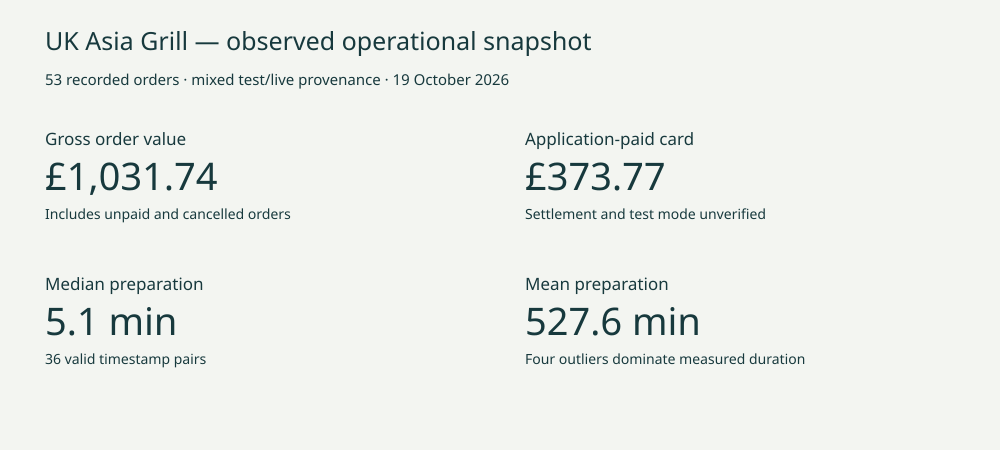

GA-RA-07 / SQL, BI & operational measurement
UK Asia Grill — Restaurant Revenue & Operations Analytics
Turn operational records into defensible metrics. Start by asking what the data actually proves.
The business question
A restaurant ordering system records baskets, payment states, fulfilment transitions and notification events. How can reporting distinguish requested demand from collected money, and genuine operational delay from incomplete measurement?
I extended the operational application with a separate read-only SQL analytics project. The emphasis is not an attractive revenue number: it is a metric contract that can withstand questions about payment provenance, joins, missing timestamps and small samples.
Technical architecture
PostgreSQL order and notification records. Guarded SELECT-only transformations, with explicit data-quality flags.
Order, menu-line, notification and basket-pair facts. One-way date/product relationships and denominator-aware DAX.
Four interactive pages backed by observed aggregates, reproducible SQL imports and evidence-qualified stakeholder recommendations.
SQL techniques
CTEs, FILTER/CASE aggregation, JSONB lateral expansion with ordinality, bounded numeric parsing, distinct basket self-joins, DENSE_RANK, LAG, cumulative windows, zero-filled date series and PERCENTILE_CONT. Order totals are calculated at the order grain before any menu or event expansion.
Calendar dates use Europe/London; durations subtract timezone-aware UTC instants. Adversarial PostgreSQL fixtures cover malformed JSON, invalid line values, repeated products, notification fanout and the repeated hour when British Summer Time ends.
Power BI data model
This table specifies the private fact-level import model. The public browser report uses precomputed aggregates and does not expose order-level slicing.
| Table | Grain | Filtering contract |
|---|---|---|
| Orders | One recorded order | Date, type and status intersect |
| MenuItems | One stored basket element | Orders and Products → lines |
| Notifications | Aggregated per order | Orders → notification facts |
| ItemPairs | Distinct unordered pair per order | Orders → pair facts |
| Date / Products | Calendar day / normalized product | Single-direction relationships |
No customer dimension, personal fields, live payment identifiers, notes or notification endpoints are required. Name-derived products are a pragmatic substitute for a missing stable SKU, with explicit limitations for variants and renames.
Interactive Power BI report
The native Power BI report can be displayed here once a separately reviewed public-safe report has been published to Power BI Service. Until then, explore the working interactive browser dashboard below. This fallback is not the native Power BI report.
Explore the interactive operations dashboard ↗ Separate browser implementation; no Power BI Service publication required.
The report
- Executive overview: recorded orders, gross value, application-paid card value, cancellation/failure rates and daily/monthly trends.
- Menu & customer demand: units, dense popularity ranks, item combinations, peak hours and product demand over time. No profitability claim.
- Kitchen operations: median/P90 duration, coverage, outliers, acknowledgement and notification retries. Anomalous records remain visible.
- Payments & data quality: payment decomposition, missing transitions, inconsistent states and fee-model reconciliation.

Key analytical findings
Executed source queries showed why metric definitions matter: operational confirmation cannot stand in for cash collection; a small number of anomalous timestamps can dominate a preparation-time mean; and a terminal notification state does not establish delivery or acknowledgement coverage. A pricing adjustment also needs an explicit analytical contract rather than a naive subtotal comparison.
These are measurement findings, not proof of commercial impact. The dashboard publishes curated aggregates: 53 orders, £1,031.74 gross order value and £373.77 application-paid card value. Preparation has a 5.1-minute median and 527.6-minute mean; four records over 120 minutes account for 98.1% of measured duration. These support a timestamp/workflow review, not a claim of kitchen inefficiency.
Recommendations
- Reconcile payment provenance first. Separate live/test transactions, application-paid card amounts, offline collection and settlement. Monitor reconciliation coverage before calling a metric revenue.
- Improve lifecycle measurement. Review invalid sequences and extreme durations. Monitor coverage, median, P90 and anomaly counts together before altering kitchen processes.
- Measure notification eligibility and coverage. Separate current event outcomes, retries, missing eligible events and staff acknowledgement. Do not infer printer reliability from absent jobs.
- Validate demand hypotheses. Use a longer live-only period to test menu and peak-hour patterns. Ingredient costs, causal uplift and staffing ROI are not established.
Power BI authoring status
The project owner supplied a real-data, de-identified PBIX with four report pages and 55 visual definitions. Archive integrity and report structure were checked; native Desktop rendering, DAX execution, refresh and reconciliation to the observed SQL snapshot were not independently verified. The PBIX is stored in the private project repository, so external recruiters may not have access. The separate public browser dashboard is not a screenshot of Power BI and uses its own clearly labelled presentation data. PostgreSQL import queries, model specification, date dimension, DAX measures and formatting guidance are available below.
Reproduce & inspect
Download observed aggregate snapshot. The original SELECT-only SQL and Power BI model specifications are linked above. Power BI Desktop validation remains pending. Aggregate tables cannot be joined to reconstruct arbitrary order-level slices or recompute overall percentiles from subgroup medians.
The scenario multiplies an assumed order volume by the observed £19.47 AOV and 22.6% cancellation rate. It assumes the mix stays fixed, has no time horizon or validated uncertainty interval, and is not a sales forecast. No uplift, profit or causal effect is claimed.